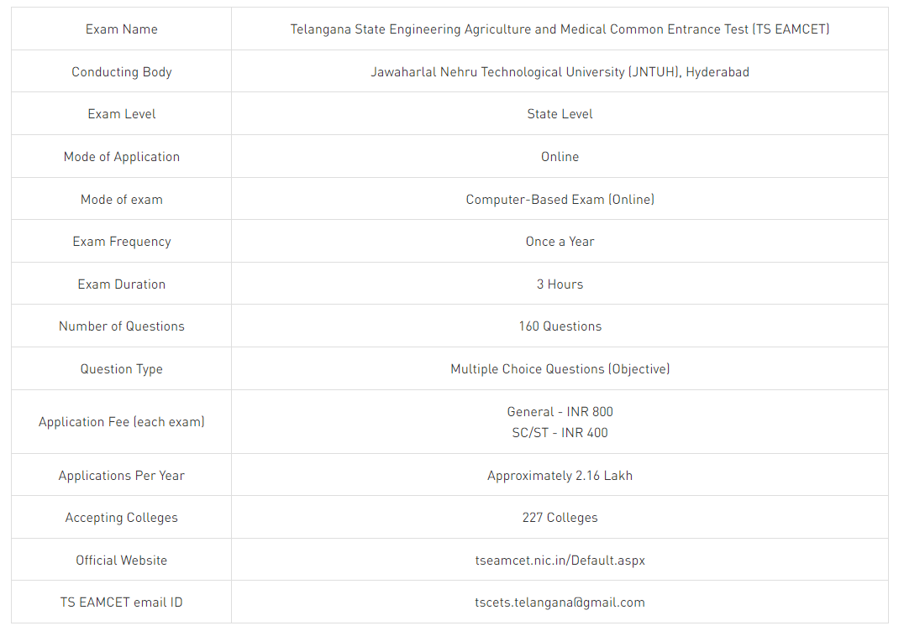
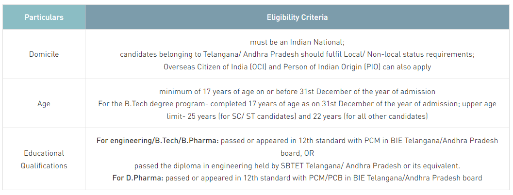
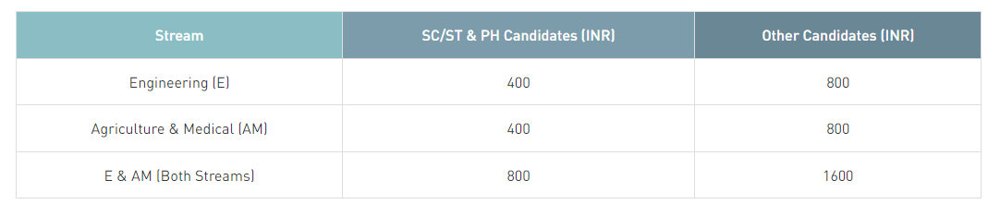

TS Eamcet
What is TS EAMCET?
Telangana State Engineering, Agriculture and Medical Common Entrance Test (TS EAMCET) is a state-level entrance test for admission to BE, BTech, BPharm, PharmD, BSc, BFSc, and BVSc courses. This state-level examination is the prerequisite for admission into various professional courses offered in University / Private Colleges in Telangana and is held once a year. Candidates are allotted seats based on the TS EAMCET marks and rank via an online centralized counselling process. To get a place in the TS EAMCET rank list, candidates have to score at least 25% of the maximum marks in TS EAMCET. However, no minimum qualifying mark is prescribed for candidates belonging to SC / ST candidates.
TS EAMCET Highlights

TS EAMCET Result
TS EAMCET Results has been released separately for engineering, agriculture and medical papers. The result contains the combined score, score weightage, and EAMCET Marks. Soon after the results are declared authorities also release TS EAMCET rank card. Ranks will be assigned to candidates in the order of merit on the basis of scores obtained after normalization. Candidates can check their result and download rank card on the official website using their application number, hall ticket number and password.
How to Check TS EAMCET Result?
The steps to check TS EAMCET Result are mentioned below:
TS EAMCET Results has been released separately for engineering, agriculture and medical papers. The result contains the combined score, score weightage, and EAMCET Marks. Soon after the results are declared authorities also release TS EAMCET rank card. Ranks will be assigned to candidates in the order of merit on the basis of scores obtained after normalization. Candidates can check their result and download rank card on the official website using their application number, hall ticket number and password.
How to Check TS EAMCET Result?
The steps to check TS EAMCET Result are mentioned below:
Step 1: Visit the official website of TS EAMCET
Step 2: You will find a link in the notification section to download TS EAMCET Result, “Download TS EAMCET Result”. Click on that link.
Step 3: Enter TS EAMCET Registration Number, Qualifying Exam Hall Ticket Number, Date of Birth and Captcha Code to access the result.
Step 4: Click on the “Submit” tab.
Step 5: TS EAMCET Results will be displayed on the screen after entering all the details.
Step 6: Take its printout for future reference.
TS EAMCET Cutoff
Admissions to various engineering and agricultural colleges of Telangana is made on the basis of TS EAMCET Cutoff. Candidates are required to score a minimum of 25% marks in order to qualify in TS EAMCET. However, there are no minimum marks for SC/ST candidates. Check TS EAMCET Cut off .
TS EAMCET Cutoff are based on various factors such as
Number of Registrations,
Number of seats available
The difficulty level of exam
Popularity or demand of the course.
TS EAMCET Counselling and Seat Allotment
TS EAMCET counselling process comprises certificate verification and option exercising procedure.
Candidates are called for the admission process according to their TS EAMCET Ranks. Certificate or document verification is held at any one of the designated helpline centers.
Post verification, candidates have to fill in the option of courses/ colleges as per their preferences.
Students who have been allotted a seat in TS EAMCET Seat Allotment result, can accept the seat with or without the option of participation in the next round of seat allotment.
Students interested in the allotted institute have to accept the seat and download their provisional seat allotment letter and report at the allotted institute.
Documents Required for TS EAMCET Counselling
Documents required during TS EAMCET Counselling include:
TS EAMCET Hall Ticket
TS EAMCET Rank Card
Aadhar Card
S.S.C or its equivalent mark sheet
Intermediate or its equivalent Memo-cum-Pass Certificate
Transfer Certificate
Caste certificate (if required)
Physically Challenged (PH) / Children of Armed Personnel (CAP) / NCC/Sports / Minority certificate (if applicable)
Residence certificate of either of parents in Telangana for a period of 10 years in case of the Non-Local candidate.
Normalization Criteria followed in TS
As TS EAMCET is conducted in multiple sessions, having questions framed out of the same syllabi, there is a possibility that candidates appearing in another session will have questions of difficulty level, In order to maintain equality and fairness, TS EAMCET Normalisation of Question Paper is followed.
Where,
SASD: Sum of Average (A) and Standard Deviation (SD) of the subject of a session in which the candidate appeared.
GASD: Sum of Average (A) and Standard Deviation (SD) of all the candidates across all sessions of the subject put together.
STA: Average mark of the top 0.1% of the candidates in the subject of a session in which the candidate appeared.
GTA: Average mark of the top 0.1% of all the candidates across all the sessions of the subject put together.
TS EAMCET 2023 Admit Card
TS EAMCET admit card is out on the official website, eamcet.tsche.ac.in for both the streams. In order to access the admit card, candidates have to download it from the official website of TS EAMCET
Candidates are required to enter their registration number and Date of Birth to download their TS EAMCET admit card.
Some of the details mentioned in the TS EAMCET Admit Card are Course Name, Candidate’s Name, Father’s Name, Mother’s Name, Date of Birth, Exam Center, TS EAMCET Hall Ticket Number, Candidate’s Photograph and Signature, Signature of Convenor, etc.
Candidates are advised to verify all the details mentioned in their admit card.
In case of any discrepancy, it must be reported immediately to the concerned authorities.
TS EAMCET Syllabus
TS EAMCET Syllabus had been reduced by 30% in each subject. The syllabus is based on 55% weightage of 1st year and 45% weightage of the 2nd-year intermediate syllabus of TS Board of Intermediate Education.
TS EAMCET Engineering stream syllabus will consist of topics from Physics, Chemistry, and Mathematics
TS EAMCET Agriculture and Medical stream syllabus will consist of topics from Biology (Botany, Zoology), Chemistry, and Physics.
TS EAMCET Preparation Tips
Students must make a proper study plan and follow certain strategies in order to clear any exam. Some of the important TS EAMCET Preparation Tips are given below:
Analyze the Syllabus- Candidates should gather all the information related to TS EAMCET syllabus before beginning the preparation. Detailed information regarding the distribution of marks, topics, and section-wise details will be made available on the official website. Always keep a copy of the syllabus with you so that nothing is left out and you do not skip important topics in the exam.
Solve Previous Years’ Question Papers- Download and solve previous year papers. Understand the structure of the examination and the types of questions asked in the paper. Solving the past years’ papers will keep a student in a better position to attempt TS EAMCET .
Attempt Mock Tests- Candidates are advised to purchase a test series and attempt mock tests regularly. Solving the mock tests will give you more confidence and will help you in analyzing exactly where you stand. Candidates should make it a daily routine to solve at least one mock test every day. Solving these mock tests puts them in a better position to attempt the real exam. Apart from this, it also helps the candidates in understanding the difficulty level of the paper and time management.
Revision- A lot of the time candidates are unable to retain what they have studied while preparing for a competitive exam. This often stems from last-minute preparation or lack of revision. In order to avoid this, students should keep revision everything they study within regular time gaps to ensure they are able to retain it.
TS EAMCET Eligibility Criteria

TS EAMCET Application Form
Candidates are required to keep all the necessary documents ready before filling the application form like the mark sheets, valid email ID and phone number, relevant certificates for proof of local status, caste certificate, scanned images of photograph and signature, etc. Students can follow the below-mentioned steps to fill their TS EAMCET application form online:
Pay TS EAMCET Application Fees
Fill TS EAMCET Application Form online
Uploading scanned documents as required
Take a print of the filled TS EAMCET application form and submit it.
TS EAMCET Application Fees
TS EAMCET Application Fee is different for different categories. The table below shows the application fee for each category. Students can pay TS EAMCET application fee in the online mode only. The application fee can be paid through net banking/ debit card/ credit card or at any TS online centres.
